HopNTrip
"Let Sabah Capture Your Soul – Adventure, Culture, and Nature Like Never Before"
Explore More
"Let Sabah Capture Your Soul – Adventure, Culture, and Nature Like Never Before"
Explore MoreHopNTrip is your trusted tourism agency based in Sabah. We curate unforgettable experiences connecting you with the natural beauty, vibrant culture, and hidden gems of Malaysia's most scenic destination.
Your Gateway to Sabah’s Wonders, discover breathtaking landscapes, rich cultures, and unforgettable adventures – with HopNTrip, your trusted travel partner for unforgettable experiences. From majestic mountains and lush rainforests to vibrant cultures and pristine islands, we’re here to guide you through the hidden gems and iconic landmarks of Sabah.
Let the adventure begin – hop on, and let’s trip together!
Sipadan Water Village, Sabah
A paradise for divers and nature lovers
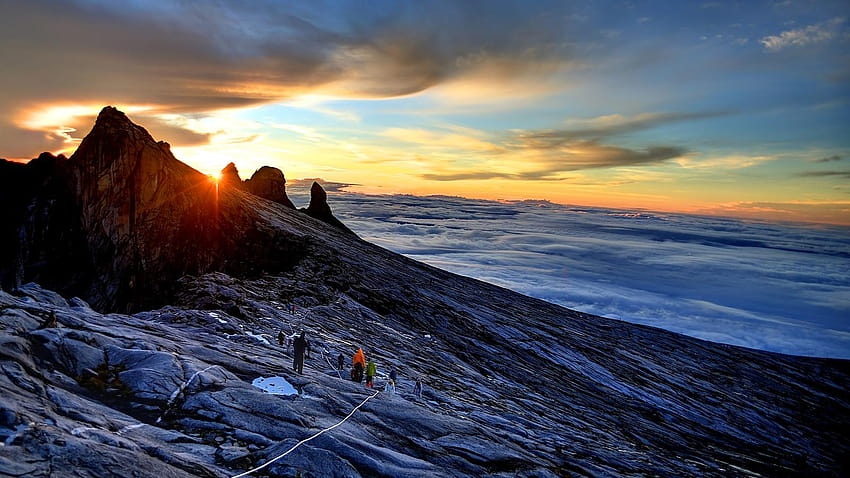
Climb Southeast Asia’s highest peak and enjoy breathtaking views above the clouds.
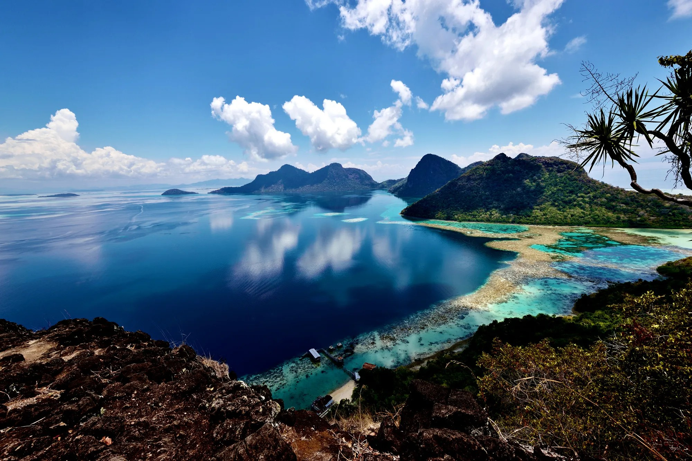
Dive into the crystal-clear waters of one of the world’s top diving spots, rich with marine life.
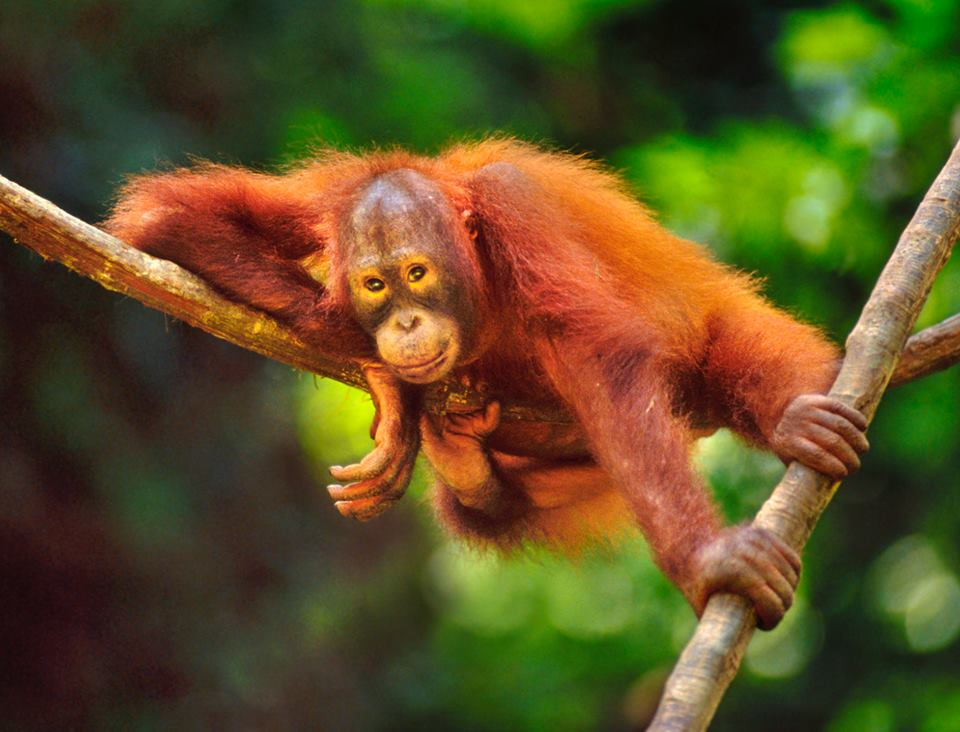
Meet the rescued orangutans in their jungle habitat at this world-famous sanctuary.
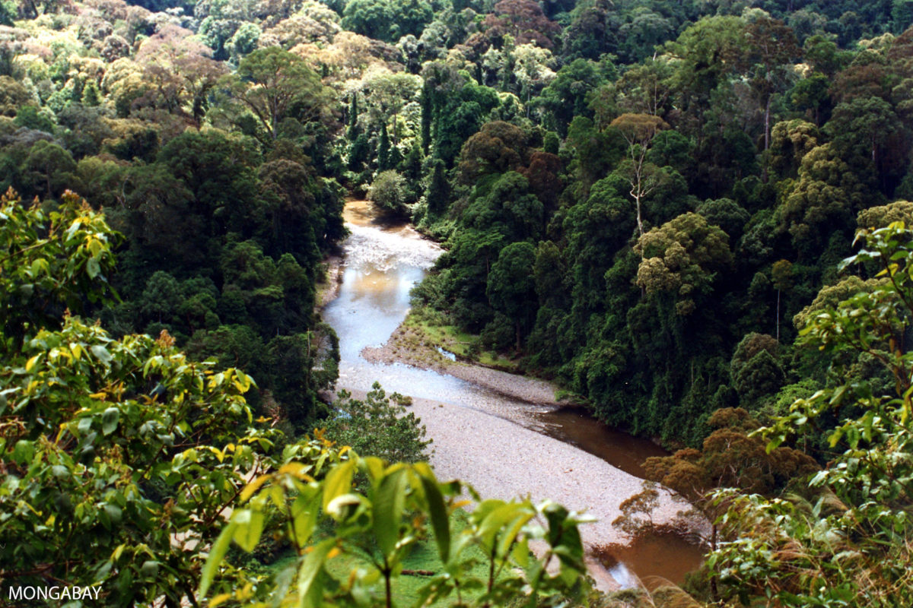
Explore ancient, lush rainforests teeming with diverse wildlife and breathtaking natural beauty.
Enjoy jungle treks, canopy walks, and night safaris in one of Borneo’s most untouched natural wonders.
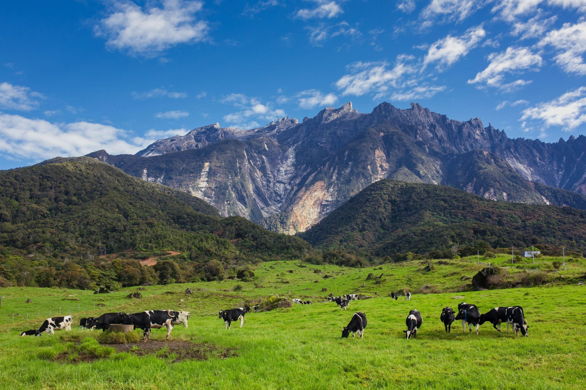
A scenic highland town known as the "New Zealand" for its cool weather, rolling hills, and Desa Dairy Farm.
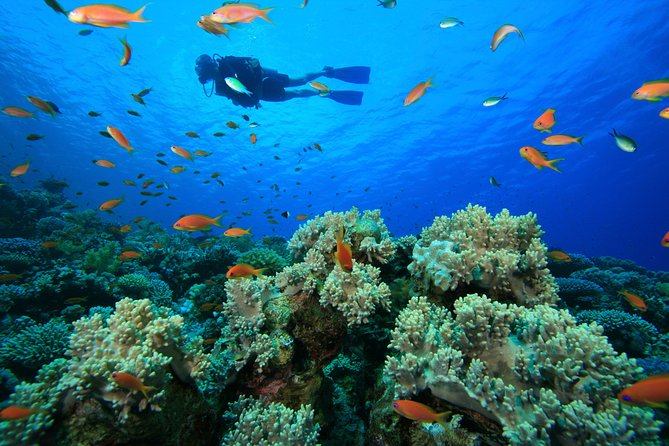
Islands near Kota Kinabalu with beaches, snorkeling, diving, and water sports.
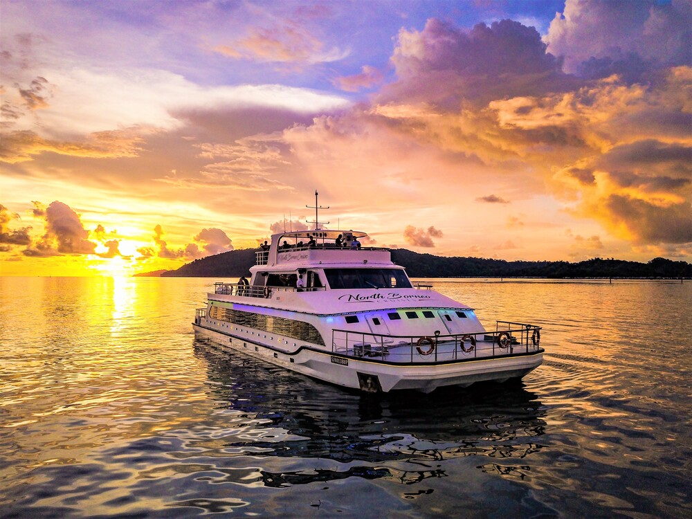
Sail along the coast of Kota Kinabalu with breathtaking views and golden skies.
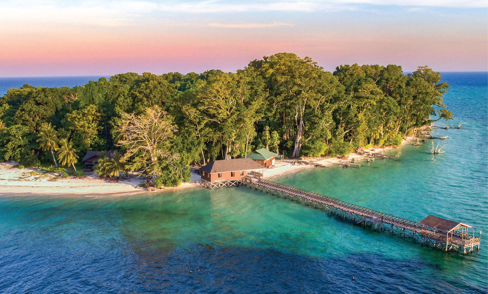
RM 1,200
3 days 2 nights trip to Sipadan Island with snorkeling and diving.
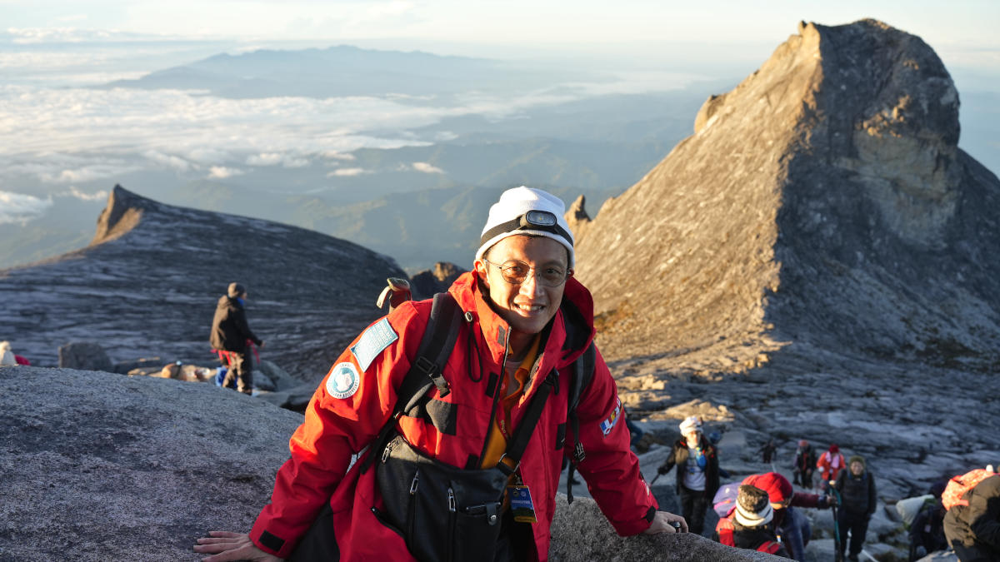
RM 950
2 day 1 night trip hike to the summit of Malaysia’s highest peak with guide.
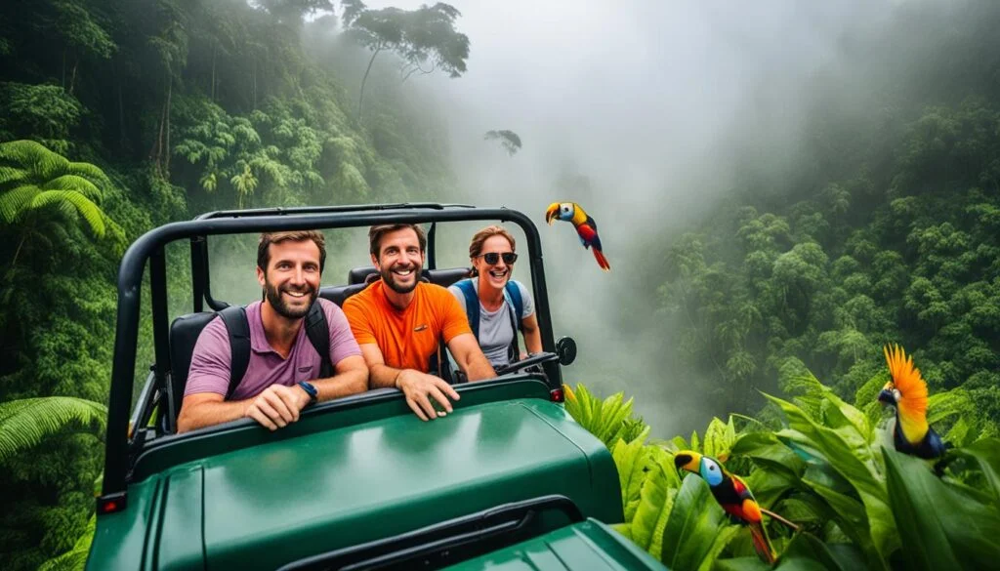
RM 780
2 days 1 night trip to Kinabatangan River with night safari and wildlife spotting.
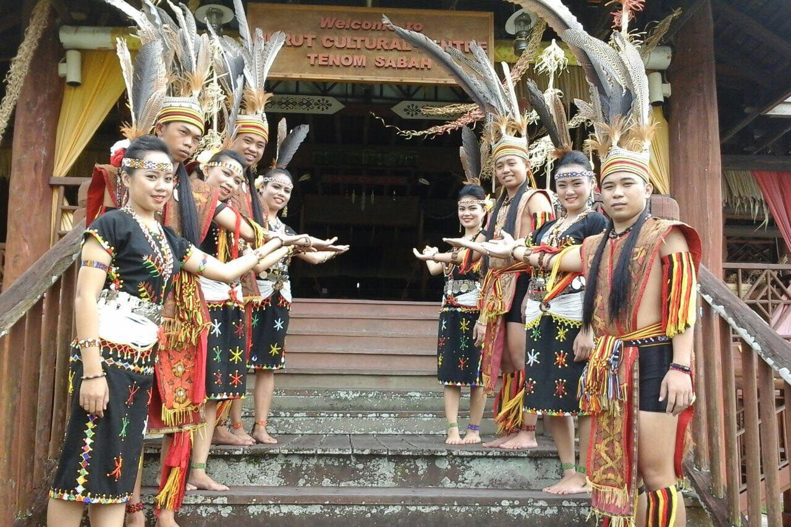
RM 350
Day tour to Mari Mari Cultural Village and local food tasting.